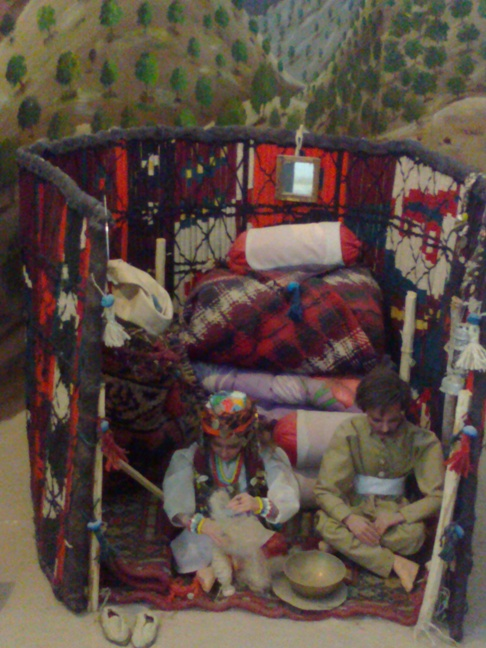
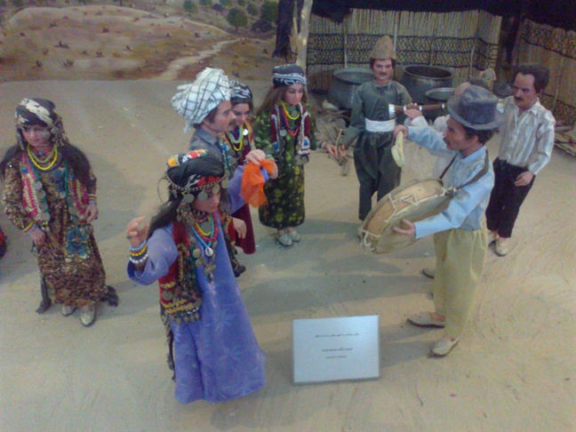
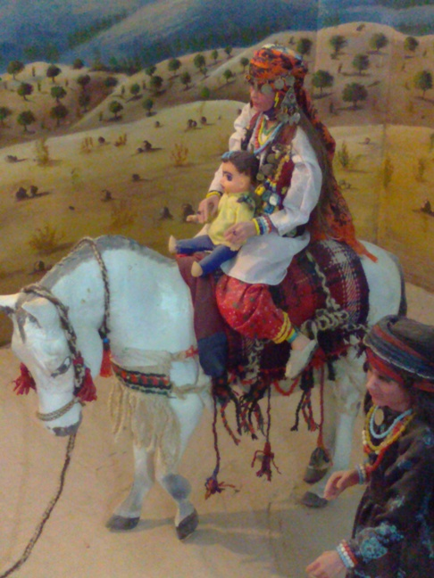
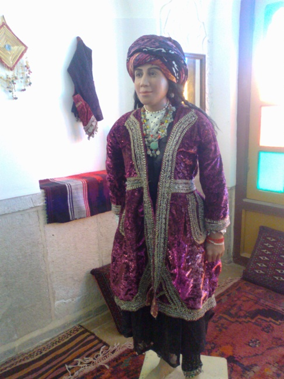
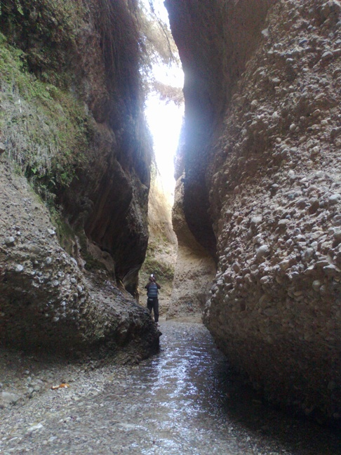
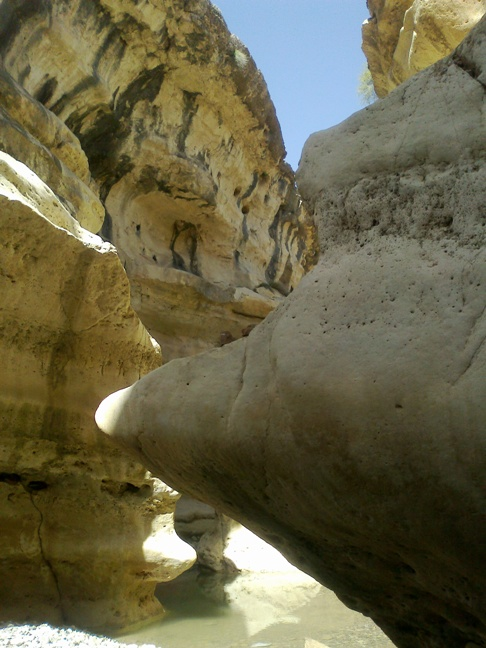

|
|

سفرنامه ی ایلام؛ دشت های زیبا، دخترکان دلتنگ / مریم زندی
دو شنبه25 اردیبهشت 1391
تغییر برای برابری:سال های زیادی بود که مشتاق بودم سفری به ایلام داشته باشم.این فرصت نوروز امسال برایم فراهم شد. قبلا خبرهای مختلفی راجع به ایلام شنیده بودم اما هرگز با مردم این دیار از نزدیک برخورد نداشتم. قبل از سفر هر چه بیشتر راجع به این شهر می خواندم بیشتر مشتاق سفر می شدم.
یک روز قبل از سال جدید راهی سفر می شویم . شب اول را در مدرسه ای نوساز در کرمانشاه می خوابیم. که هم آب گرم دارد و هم حمام. و صبح زود به طرف ایلام راهی می شویم. سال تحویل را در دشت های سر سبز و زیبا می ایستیم و سفره هفت سین را روی تخته سنگی می چینیم. بعد از خوردن صبحانه و اعلام سال نو از رادیو،سکوتی حکمفرما می شود، به فکر فرو می روم مثل هر سال بغض می کنم، به یاد دوستانی که در کنارم نیستند، اما به خودم می آیم و تبریک ها و روبوسی های سال نو شروع می شود. باید راهی شویم. فرصتی برای ایستادن نیست .

بعد از گذشت ساعتی به ایلام می رسیم. چهره شهر مانند شهر قبلی، کرمانشاه نیست. از آن همه ساخت و ساز و جنب وجوش خبری نیست اول از همه به ستاد اسکان می رویم. برعکس شهرهای دیگر امور ستاد کامپیوتری نیست . مکانی است محقر و با یک نفر پرسنل. جوانی که آن جاست می گوید : " تازه چند سالی است که مسافر نوروزی به این شهر می آید و ستاد اسکان در این شهر تشکیل شده است." موفق می شویم برای خودمان در بافت بومی که منطقه ی قدیمی شهر هم هست سر پناهی در مدرسه ای بگیریم.بعد از استقرار راهی بازار و کوچه محله های شهر می شویم. و از ان جا سری هم به موزه «والی» می زنیم.

راهنمای جوان دختری است که از قدمت شهر برایمان می گوید از مکان موزه که قبلا کاخ والی ایلام بوده و از زنان والی که مجسمه هایی از آنان درست شده می گوید. نشانمان می دهد زنی بلند بالا و خوش قامت که زن اول والی بوده و ایلامی. و از مجسمه های زنان دیگر او. یکی که از همه جوان تر بوده؛ نوه ناصر الدین شاه که به منظور تحکیم رابطه با دولت مرکزی به زنی گرفته. زمزمه زنان و دخترانی که از شهرهای مختلف به موزه آمده اند شروع می شود عجب دوره ای بوده بدبخت زن اولی! دختر جوان راهنما که لباس های محلی به تن دارد – لباس¬های محلی ترکیبی از لباس های آن دوره و حال است-می گوید : " خوب زمانه این طور بوده، مطمئنا زن والی هم ناراضی بوده اما چاره ای نداشته . مثل حالا نبوده که بتونه حرفی بزنه یا اعتراضی بکنه!"
راهنمای دیگر که مردی است جوان از گذشته ها و تمدن کهن ایلامی می گوید تا می رسد به حال ؛ از جنگ ایران و عراق و تاثیرات آن در ایلام که شهری مرزی بوده می گوید. می پرسم گویی این شهر هنوز هم به خود نیامده هم آثار خرابی ها هنوز پیداست هم چهره های مردم غم زده است. راهنما می گوید: "این شهر قبل از انقلاب فقط چند سال بوده که تبدیل به یک فرمانداری کل مستقل شده بوده،بعد از انقلاب هم استان شده که بلافاصله جنگ شروع می شود و طی هشت سال بمباران و موشک باران پیاپی از ایلام و روستاهای آن چیزی باقی نمی ماند. سال های سال مردم بسیاری از این شهر مهاجرت کردند و به مناطق دور و نزدیک رفتند و خانواده های زیادی پراکنده شدند. مردان در جبهه بودند و خانواده آنها در شهرهای دیگر زندگی کردند. در روستاها هم که خانواده ها از جنگ بی نصیب نبودند خانه و کاشانه را رها کرده و مدت ها در داخل جنگل و زیر درختان و در چادرها زندگی کردند. بدون هیچ امکاناتی مدت های زیادی بدون برق و آب آشامیدنی. مردان زیادی در این منطقه شیمیایی شدند و حالا باز این زنان و خانواده های آنان هستند که بار مراقبت و مریض داری از آنها را به دوش می کشند."

حرف به درازا می¬کشد و هر کس از بخشی از مصیبت هایی که بر این شهر رفته می گوید. سوالات بازدید کننده ها هم کم کم شروع می شود. راهنمای دیگری می گوید : «سال های اخیر هم در حق این شهر بی مهری شده و جز وعده وعید چیزی نصیب ایلامی ها نشده این جا در واقع مهد تمدن کهن ایرانی و ایلامی است ولی از امکانات تفریحی برای جوانان خبری نیست. بی کاری و فقر و نابسامانی زمینه های افسردگی شدیدی را فراهم کرده است . از طرف دیگر عقب ماندگی فرهنگی منطقه و تسلط فرهنگ عشیره ای و روستایی دختران را در فشار زیادی قرار داده و آنها از آزادی های اجتماعی زنان در شهرهای دیگر محرومند. از این نظر ایلام حتی قابل مقایسه با کرمانشاه که فاصله زیادی با ایلام ندارد هم نیست.»
شب به خانه برگشتیم با یک دنیا سوال در ذهنمان . زن سرایدار مهمان نوازی که خانه اش درست جلوی در ورودی است برایمان چایی می ریزد و از ما پذیرایی می کند . چایی را که خوردیم از اومی پرسم که شما در دوران جنگ کجا بودید ؟ می گوید:
 ما چند سالی است که سرو سامان گرفته ایم من با چند نفراز همسایه ها که آشنایی در یکی از شهرهای شمالی داشتند رفتیم شمال.ولی شوهر و دو پسرم در جبهه بودند و خیلی کم به ما سر می زدند و آن قدری خرجی داشتیم که یک نان و برنجی بخریم. چندین بار شوهرم زخمی شد و من فقط یک بار توانستم برای دیدن او بیایم. چون با بچه های کوچک نمی شد زیاد به این طرف و آن طرف رفت .
ما چند سالی است که سرو سامان گرفته ایم من با چند نفراز همسایه ها که آشنایی در یکی از شهرهای شمالی داشتند رفتیم شمال.ولی شوهر و دو پسرم در جبهه بودند و خیلی کم به ما سر می زدند و آن قدری خرجی داشتیم که یک نان و برنجی بخریم. چندین بار شوهرم زخمی شد و من فقط یک بار توانستم برای دیدن او بیایم. چون با بچه های کوچک نمی شد زیاد به این طرف و آن طرف رفت .

شوهرش که مرد خوشرویی است سرش را نشانمان می دهد و می گوید:
 هنوز هم ترکشی از آن دوران در سرم مانده. تنها شانسی که من و زنم آوردیم این بود که توانستیم به سر کارمان برگردیم و دوباره در مدرسه ای مشغول کار شویم. اما دو پسرم بی کارند.
هنوز هم ترکشی از آن دوران در سرم مانده. تنها شانسی که من و زنم آوردیم این بود که توانستیم به سر کارمان برگردیم و دوباره در مدرسه ای مشغول کار شویم. اما دو پسرم بی کارند.
خوشبختانه دو دختر جوان این خانم و شوهرانشان به جمع ما پیوستند. حالا آنها سوالات زیادی از ما و از تهران دارند. از ما می پرسند که چرا به ایلام آمده ایم و دیگری می گوید: "آخه ایلام دیدن دارد ؟" اما دختر بزرگتر می گوید خوب ؛ کجاها را دیده اید و خوشحال می شوند که فردا همراه ما باشند و پیشنهاد می کنند که ما را به تنگه زینگان که به آن غار زینگان هم می گویند ببرند و ما هم استقبال می کنیم.

فردا بعد از خوردن نان معروف و محلی صمعون - نانی مثلثی شکل که ضخیم تر از نان بربری است نانی که اصالتا عراقی است و از آن جا به ایران آورده شده و حالا خودشان اعتراف می کنند که ایرانی ها بهتر از آنها این نان را درست می کنند- ساعت هشت صبح راه می افتیم و سمیه و سمیرا هم همراه بچه های قد و نیم قدشان با ما راهی می شوند. درراه از آنها می پرسم که علت آمار بالای خود سوزی زنان این شهر چیست ؟ سمیه می گوید:
 خوشبختانه چند سال است که زنان دختران جوان این شهر به ورزش و مخصوصا کوهنوردی روی آورده اند و هم اکنون گروه کوهنوردی زنان بیش از صد نفر عضو دارد که اغلب جمعه ها برنامه دارند وگرنه این جا اصلا تفریح برای جوانان نیست . و بیکاری و فقر بیداد می کند.
خوشبختانه چند سال است که زنان دختران جوان این شهر به ورزش و مخصوصا کوهنوردی روی آورده اند و هم اکنون گروه کوهنوردی زنان بیش از صد نفر عضو دارد که اغلب جمعه ها برنامه دارند وگرنه این جا اصلا تفریح برای جوانان نیست . و بیکاری و فقر بیداد می کند.
می گویم: که خوب این مشکل ممکن است که در همه شهرها باشد. ولی چرا این جا باعث می شود که زنان به خودشان صدمه بزنند؟
 شاید یکی از علت هایش عوارض جنگ باشد هنوز که هنوز است پدرهای خیلی از دوستانم بیمار هستند و شیمیایی شده اند و دائم خانواده را اذیت می کنند و خودشان هم حالشان بهتر نمیشود و روز به روز بدتر می شوند. آنها اعصاب ندارند و دائم دارو مصرف می کنند و خیلی ها هم بعد از سال ها مراقبت فوت کرده اند و حالا مادر مانده چند دختر و پسر جوان که استطاعت مالی زیادی هم ندارند.
شاید یکی از علت هایش عوارض جنگ باشد هنوز که هنوز است پدرهای خیلی از دوستانم بیمار هستند و شیمیایی شده اند و دائم خانواده را اذیت می کنند و خودشان هم حالشان بهتر نمیشود و روز به روز بدتر می شوند. آنها اعصاب ندارند و دائم دارو مصرف می کنند و خیلی ها هم بعد از سال ها مراقبت فوت کرده اند و حالا مادر مانده چند دختر و پسر جوان که استطاعت مالی زیادی هم ندارند.
سمیرا که پرستاری خوانده و حالا در بیمارستان کار می کند می گوید:
 آمار خودکشی ها بیشتر شامل روستا است. مشکلات آن جاست. خیلی ازقربانیان خودسوزی را از روستا به بیمارستان می آورند. برای جوان ها مخصوصا دخترها در روستا هیچی نیست. نه تفریحی و نه سرگرمی و نه آینده ای."
آمار خودکشی ها بیشتر شامل روستا است. مشکلات آن جاست. خیلی ازقربانیان خودسوزی را از روستا به بیمارستان می آورند. برای جوان ها مخصوصا دخترها در روستا هیچی نیست. نه تفریحی و نه سرگرمی و نه آینده ای."

به دره زینگان می رسیم تنگه ای پر آب که در بعضی از جاها تا زانو خیس می شویم اما زیباست با دیواره هایی بلند و گل و گونه های سبز که از دیواره ها آویزانند . تنگه ای که کمتر مسافری می تواند بدون راهنمای محلی به آن جا برود. سمیه که معلم است می گوید:
 خوشبختانه خانواده ها به دخترانشان اجازه می دهند که با هییت کوهنوردی شهر که مسئول آن یک زن است به این مکان بیایند و دره ای هم به اسم دره ارغوان ها در شهر است که بیشتر جمعه ها زنان به آن جا می روند. ومی گوید که این در روحیه جوانان خیلی تاثیر دارد.
خوشبختانه خانواده ها به دخترانشان اجازه می دهند که با هییت کوهنوردی شهر که مسئول آن یک زن است به این مکان بیایند و دره ای هم به اسم دره ارغوان ها در شهر است که بیشتر جمعه ها زنان به آن جا می روند. ومی گوید که این در روحیه جوانان خیلی تاثیر دارد.

 می گویم: سمیه این جا خیلی شبیه تنگه واشی فیروزکوه در صد کیلومتر شرق تهران است. که البته صبح های جمعه و مواقع تعطیلی مملو از دختران و پسران جوانان است که تورها با خود می آورند. که سمیه آه از نهادش بلند می شود و می گوید :
می گویم: سمیه این جا خیلی شبیه تنگه واشی فیروزکوه در صد کیلومتر شرق تهران است. که البته صبح های جمعه و مواقع تعطیلی مملو از دختران و پسران جوانان است که تورها با خود می آورند. که سمیه آه از نهادش بلند می شود و می گوید :
 بابا تهران یک کشور دیگه است. ایلام را با تهران مقایسه می کنید ؟! این جا همه چی تبدیل به فاجعه می شود. یک رابطه ساده دختر و پسر با اس ام اس هم می تواند برای دختر مشکل ساز بشود. دیگر چه برسد که با هم در خیابان و محل هایی مثل این جا دیده شوند. دیگه خوشبخت ترین دخترا این جا آنهایی هستند که در پناه برادرهایشان هستند. و با آنها بیرون می روند مثلا آنها را به مدرسه می رسانند و یا احیانا با هم به مهمانی می روند.
بابا تهران یک کشور دیگه است. ایلام را با تهران مقایسه می کنید ؟! این جا همه چی تبدیل به فاجعه می شود. یک رابطه ساده دختر و پسر با اس ام اس هم می تواند برای دختر مشکل ساز بشود. دیگر چه برسد که با هم در خیابان و محل هایی مثل این جا دیده شوند. دیگه خوشبخت ترین دخترا این جا آنهایی هستند که در پناه برادرهایشان هستند. و با آنها بیرون می روند مثلا آنها را به مدرسه می رسانند و یا احیانا با هم به مهمانی می روند.
همراه آنها به شهر برمی گردیم و بعد از صرف ناهار به راه خود ادامه می دهیم. از ایلام به سمت جنوب می رویم . بعد از یک ساعتی به تنگه رازیانه می رسیم. که سمیه و سمیرا به ما گفته بودند که حتما این تنگه را ببیند دره ای زیبا و پر آب که صخره های زیادی دارد و برآمدگی ها و تو رفتگی های دره در طول چندین کیلومتر به شکل سرهای نهنگ و دولفین صیقل خورده بود.

اما آنچه که بعد از دیدن در دورتر توجه مان را جلب کرد چندین چادر سیاه در تنگه رازیانه بود دختری جوان در دشت به دنبال بزغاله اش بود. او بلوز وشلواری ورزشی به تن و کلاه ورزشی به سر داشت کمکش می کنیم بزغاله را با هم می گیریم و با او به کنار صخره می رویم به حصاری که دور تا دور زمینی کشیده شده و پنجاه بزغاله تازه به دنیا آمده در آن نگهداری می شود. آنها با دیدن ما سرو صدا می کردند و به هر طرف می پریدند. به شوق آمدیم و با تعارف دختر جوان اندکی کنارش نشستیم.از ما پرسید که از کجا می آییم و به کجا می رویم و از او پرسیدیم که تو چی ؟ اسمش فاطمه بود و خیلی خوب فارسی حرف می زد و معلوم بود که با سواد است .گفتیم فاطمه در این کوه و جنگل تنها چه میکنی که گفت: پدر و مادرش با گله اول صبح به دورترها رفته اند و کوه ها را نشانمان داد و گفت آن طرف جاده هم تماما زمین های عمویش است و به ما گفت که حتما غار بالای کوه و عمویش را که آن جاست را هم برویم و ببینیم. می خندد و می گوید که این زمین ها تا چشم کار می کند مال ماست. از چادرها پرسیدیم. خیلی تعارفمان می کندبا او به درون چادرها می رویم. یک چادر بزرگ برای خواب که تمیز و مرتب رختخواب ها در آن چیده شده اند و یک چادر برای پخت و پز که وسط آن گودالی است که اجاق در آن قرار دارد سوخت آن چوب است و دیگ شیر روی آن می جوشید. وسایل مختصر آشپزی کنار آن به قدر کفایت و مختصر دیده می شود. می گوید ببخشید که این جا کوچک است چادر دیگرمان که اسباب پذیرایی در آن بود در زمستان سوخت. پدر و مادرم دست تنها بودند و ونتوانستند آن را مهار کنند. می گویم تو کجا بودی فاطمه ؟ می گوید :
 من هفته ای سه روز شهرم . مربی کلاس های رزمی هستم. میگویم مگر می شود؛ چه طور اجازه دادند که شهر بروی ؟ می گوید برادرهایم به شهر رفتند و مربی رزمی شدند و حالا در شهر کار می کنند و به خاطر آنها به من هم اجازه دادند که به شهر بروم سواد یاد بگیرم و حالا هم خودم مربی شدم. می گوید برادرهایم باعث شدند که پدرم به من اجازه بدهد که به شهر بروم. با او شوخی می کنیم می گویم فاطمه خوب است شوهرت نداند؟ که میگوید زورشان به من نمی رسد من از دستشان در رفتم. مثل خواهرهایم نبودم من درس خواندم و پایم به شهر باز شد به خنده میگوید: رزمی کار را به راحتی نمی توانند شوهر دهند. با فاطمه راه می افتیم کوه ها را نشانمان می دهد و می رسیم به چند درخت کنار جاده که دور آن ها سنگ چین شده می پرسیم این سنگ چین ها چیست ؟ می گوید زیر این درختان اتاق بزرگی است که قبرستان است، از این سنگ چین ها وارد میشویم اتاق با گچ سفید شده، یک طرف قبر مردان است و طرف دیگر قبر زنان است. می گوید : زمان های قدیم همه چی حرمت داشت و زن و مرد را کنار هم نمی گذاشتند. منظورش را نمی فهمم و می پرسم یعنی چی ؟ می گوید: خیلی از آداب و رسوم برای مردان وزنان فرق داشت و برای همین کنار هم نبودند. اما فاطمه اجازه نمی دهد که به زیر زمین برویم.
من هفته ای سه روز شهرم . مربی کلاس های رزمی هستم. میگویم مگر می شود؛ چه طور اجازه دادند که شهر بروی ؟ می گوید برادرهایم به شهر رفتند و مربی رزمی شدند و حالا در شهر کار می کنند و به خاطر آنها به من هم اجازه دادند که به شهر بروم سواد یاد بگیرم و حالا هم خودم مربی شدم. می گوید برادرهایم باعث شدند که پدرم به من اجازه بدهد که به شهر بروم. با او شوخی می کنیم می گویم فاطمه خوب است شوهرت نداند؟ که میگوید زورشان به من نمی رسد من از دستشان در رفتم. مثل خواهرهایم نبودم من درس خواندم و پایم به شهر باز شد به خنده میگوید: رزمی کار را به راحتی نمی توانند شوهر دهند. با فاطمه راه می افتیم کوه ها را نشانمان می دهد و می رسیم به چند درخت کنار جاده که دور آن ها سنگ چین شده می پرسیم این سنگ چین ها چیست ؟ می گوید زیر این درختان اتاق بزرگی است که قبرستان است، از این سنگ چین ها وارد میشویم اتاق با گچ سفید شده، یک طرف قبر مردان است و طرف دیگر قبر زنان است. می گوید : زمان های قدیم همه چی حرمت داشت و زن و مرد را کنار هم نمی گذاشتند. منظورش را نمی فهمم و می پرسم یعنی چی ؟ می گوید: خیلی از آداب و رسوم برای مردان وزنان فرق داشت و برای همین کنار هم نبودند. اما فاطمه اجازه نمی دهد که به زیر زمین برویم.
کمی جلوتر سنگ قبری پر ابهت؛ بزرگ ونیم متر برجسته تر از زمین با سنگی گرانیت مشکی که روی آن نوشته شده نیم طلا می بینیم. فاطمه می گوید: این زن عمویم است زن خوبی بود و چند سال پیش فوت کرده نود سالش بود و او را دیگر در داخل قبرستان زیر درختان نگذاشتند و بعد از جاده کشی قبرش افتاده کنار جاده. اندکی کنار قبر نیم طلا می نشینیم او از خاطراتش با زن عموی مقتدرش می گوید. از امنیت منطقه می پرسیم که می گوید : این جا امن امن است و مشکلی نیست و می گوید که گاهی برادرهایم به ما سر می زنند. فاطمه دعوتمان می کند که شب پیش آنها بمانیم اما باید برویم از او خداحافظی می کنیم و به راهمان ادامه می دهیم.
به طرف دره شهر حرکت می کنیم . در راه چند جشن عروسی می بینیم زنان و مردان بسیاری که در دشت دست در دست هم به پایکوبی مشغولند و و نوازنده ها چنان ساز و دهل می نوازند که هر مسافری در جاده را به خود می خوانند. دوباره می ایستیم و رقص رنگارنگ زنان و مردان را با اشتیاق نگاه می کنیم.